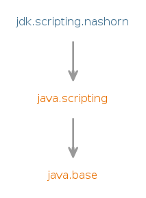

@Deprecated(since="11", forRemoval=true)
Module jdk.scripting.nashorn
Deprecated, for removal: This API element is subject to removal in a future version.
Nashorn JavaScript script engine and APIs, and the jjs tool
are deprecated with the intent to remove them in a future release.
Provides the implementation of Nashorn script engine and
the runtime environment for programs written in ECMAScript 5.1.
The
Nashorn exposes a non-standard global object named
Nashorn is a runtime environment for programs written in ECMAScript 5.1.
Usage
The recommended way to use Nashorn is through the JSR-223 "Scripting for the Java Platform" APIs found in thejavax.script package. Usually, you'll obtain a
ScriptEngine instance for Nashorn using:
import javax.script.*;
...
ScriptEngine nashornEngine = new ScriptEngineManager().getEngineByName("nashorn");
and then use it just as you would any other JSR-223 script engine. See
jdk.nashorn.api.scripting package for details.
Compatibility
Nashorn is 100% compliant with the ECMA-262 Standard, Edition 5.1. It requires a Java Virtual Machine that implements the JSR-292 "Supporting Dynamically Typed Languages on the Java Platform" specification (often referred to as "invokedynamic"), as well as the already mentioned JSR-223.Interoperability with the Java platform
In addition to being a 100% ECMAScript 5.1 runtime, Nashorn provides features for interoperability of the ECMAScript programs with the Java platform. In general, any Java object put into the script engine's context will be visible from the script. In terms of the standard, such Java objects are not considered "native objects", but rather "host objects", as defined in section 4.3.8. This distinction allows certain semantical differences in handling them compared to native objects. For most purposes, Java objects behave just as native objects do: you can invoke their methods, get and set their properties. In most cases, though, you can't add arbitrary properties to them, nor can you remove existing properties.Java collection handling
Native Java arrays andLists support indexed access to
their elements through the property accessors, and Maps
support both property and element access through both dot and square-bracket
property accessors, with the difference being that dot operator gives
precedence to object properties (its fields and properties defined as
getXxx and setXxx methods) while the square bracket
operator gives precedence to map elements. Native Java arrays expose
the length property.
ECMAScript primitive types
ECMAScript primitive types for number, string, and boolean are represented withNumber, CharSequence, and
Boolean objects. While the most often used number type
is Double and the most often used string type is
String, don't rely on it as various internal optimizations
cause other subclasses of Number and internal implementations of
CharSequence to be used.
Type conversions
When a method on a Java object is invoked, the arguments are converted to the formal parameter types of the Java method using all allowed ECMAScript conversions. This can be surprising, as in general, conversions from string to number will succeed according to Standard's section 9.3 "ToNumber" and so on; string to boolean, number to boolean, Object to number, Object to string all work. Note that if the Java method's declared parameter type isjava.lang.Object, Nashorn objects are passed without any
conversion whatsoever; specifically if the JavaScript value being passed
is of primitive string type, you can only rely on it being a
java.lang.CharSequence, and if the value is a number, you can only
rely on it being a java.lang.Number. If the Java method declared
parameter type is more specific (e.g. java.lang.String or
java.lang.Double), then Nashorn will of course ensure
the required type is passed.
SAM types
As a special extension when invoking Java methods, ECMAScript function objects can be passed in place of an argument whose Java type is so-called "single abstract method" or "SAM" type. While this name usually covers single-method interfaces, Nashorn is a bit more versatile, and it recognizes a type as a SAM type if all its abstract methods are overloads of the same name, and it is either an interface, or it is an abstract class with a no-arg constructor. The type itself must be public, while the constructor and the methods can be either public or protected. If there are multiple abstract overloads of the same name, the single function will serve as the shared implementation for all of them, and additionally it will also override any non-abstract methods of the same name. This is done to be consistent with the fact that ECMAScript does not have the concept of overloaded methods.The Java object
Nashorn exposes a non-standard global object named Java that is
the primary API entry point into Java platform-specific functionality.
You can use it to create instances of Java classes, convert from Java arrays
to native arrays and back, and so on.
Other non-standard built-in objects
In addition toJava, Nashorn also exposes some other
non-standard built-in objects:
JSAdapter, JavaImporter, Packages- Module Graph:
- 
- Since:
- 9
{kind=link}
-
-
Packages
Exports Package Description jdk.nashorn.api.scripting This package provides thejavax.scriptintegration, which is the preferred way to use Nashorn.jdk.nashorn.api.tree Nashorn parser API provides interfaces to represent ECMAScript source code as abstract syntax trees (AST) and Parser to parse ECMAScript source scripts.Indirect Exports From Packages java.scripting javax.script
-
Modules
Requires Modifier Module Description transitive java.scripting Defines the Scripting API.
-
Services
Provides Type Description ScriptEngineFactory
-